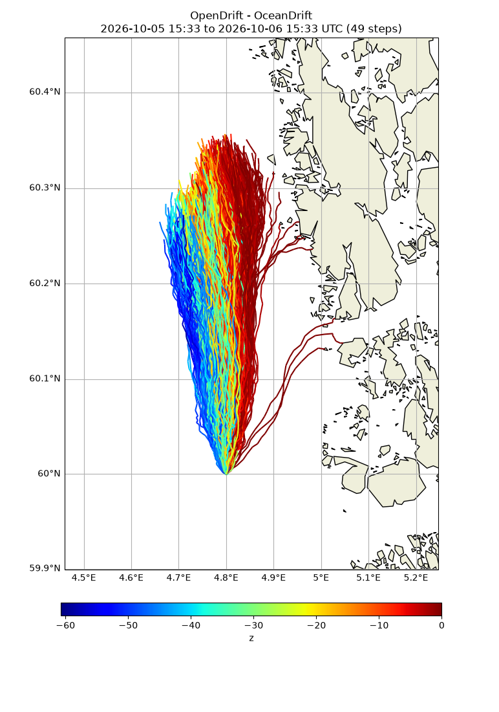
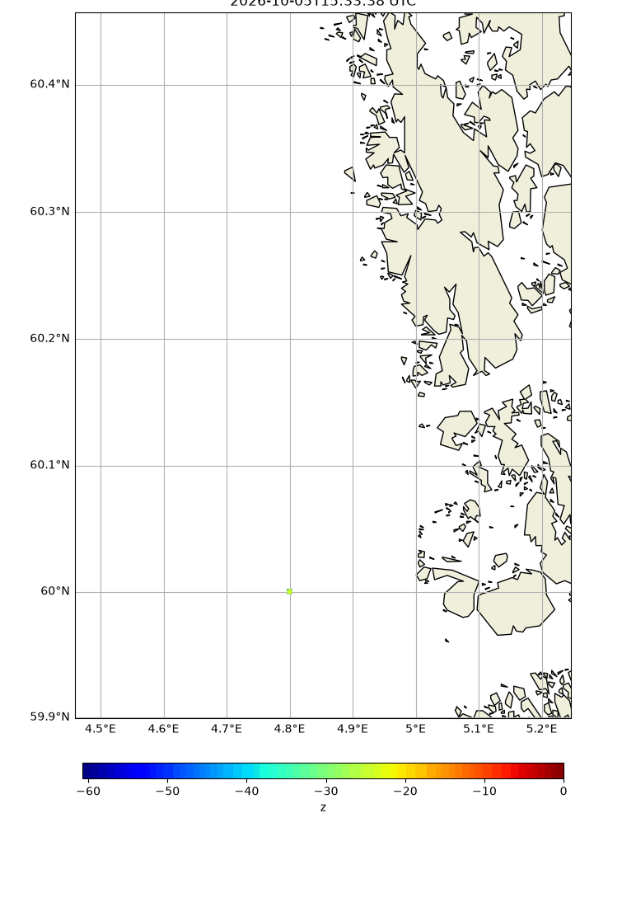

Note
Go to the end to download the full example code.
Drift at different depths
from datetime import datetime, timedelta
import numpy as np
from opendrift.models.oceandrift import OceanDrift
o = OceanDrift(loglevel=20) # Set loglevel to 0 for debug information
15:33:38 INFO opendrift:569: OpenDriftSimulation initialised (version 1.14.11 / v1.14.12-32-g22db1c0)
Using live data from Thredds
o.add_readers_from_list([
'https://thredds.met.no/thredds/dodsC/fou-hi/norkystv3_800m_m00_be'])
Adding some diffusion
o.set_config('environment:constant:horizontal_diffusivity', 10) # m2/s
Seed 1000 elements at random depths
z = -np.random.rand(2000)*50
o.seed_elements(lon=4.8, lat=60.0, z=z, radius=0, number=2000,
time=datetime.now())
print(o)
15:33:38 INFO opendrift.models.basemodel.environment:203: Adding a global landmask from GSHHG
15:33:44 INFO opendrift.models.basemodel.environment:227: Fallback values will be used for the following variables which have no readers:
15:33:44 INFO opendrift.models.basemodel.environment:230: x_sea_water_velocity: 0.000000
15:33:44 INFO opendrift.models.basemodel.environment:230: y_sea_water_velocity: 0.000000
15:33:44 INFO opendrift.models.basemodel.environment:230: sea_surface_height: 0.000000
15:33:44 INFO opendrift.models.basemodel.environment:230: x_wind: 0.000000
15:33:44 INFO opendrift.models.basemodel.environment:230: y_wind: 0.000000
15:33:44 INFO opendrift.models.basemodel.environment:230: upward_sea_water_velocity: 0.000000
15:33:44 INFO opendrift.models.basemodel.environment:230: ocean_vertical_diffusivity: 0.000000
15:33:44 INFO opendrift.models.basemodel.environment:230: sea_surface_wave_significant_height: 0.000000
15:33:44 INFO opendrift.models.basemodel.environment:230: sea_surface_wave_stokes_drift_x_velocity: 0.000000
15:33:44 INFO opendrift.models.basemodel.environment:230: sea_surface_wave_stokes_drift_y_velocity: 0.000000
15:33:44 INFO opendrift.models.basemodel.environment:230: ocean_mixed_layer_thickness: 50.000000
15:33:44 INFO opendrift.models.basemodel.environment:230: sea_floor_depth_below_sea_level: 10000.000000
===========================
Model: OceanDrift (OpenDrift version 1.14.11)
0 active Lagrangian3DArray particles (0 deactivated, 2000 scheduled)
-------------------
Environment variables:
-----
horizontal_diffusivity
1) constant_reader
-----
land_binary_mask
1) global_landmask
-----
Readers not added for the following variables:
ocean_mixed_layer_thickness
ocean_vertical_diffusivity
sea_floor_depth_below_sea_level
sea_surface_height
sea_surface_wave_significant_height
sea_surface_wave_stokes_drift_x_velocity
sea_surface_wave_stokes_drift_y_velocity
upward_sea_water_velocity
x_sea_water_velocity
x_wind
y_sea_water_velocity
y_wind
---
Lazy readers:
LazyReader: https://thredds.met.no/thredds/dodsC/fou-hi/norkystv3_800m_m00_be
Discarded readers:
===========================
Running model
o.run(duration=timedelta(hours=24), time_step=1800)
15:33:44 INFO opendrift:1910: Skipping environment variable ocean_vertical_diffusivity because of condition ['drift:vertical_mixing', 'is', False]
15:33:44 INFO opendrift:1910: Skipping environment variable ocean_mixed_layer_thickness because of condition ['drift:vertical_mixing', 'is', False]
15:33:44 INFO opendrift:1921: Storing previous values of element property lon because of condition (('general:coastline_action', 'in', ['stranding', 'previous']), 'or', ('general:seafloor_action', 'in', ['previous']))
15:33:44 INFO opendrift:1921: Storing previous values of element property lat because of condition (('general:coastline_action', 'in', ['stranding', 'previous']), 'or', ('general:seafloor_action', 'in', ['previous']))
15:33:44 INFO opendrift:1929: Storing previous values of environment variable sea_surface_height because of condition ['drift:vertical_advection', 'is', True]
15:33:45 INFO opendrift:958: Using existing reader for land_binary_mask to move elements to ocean
15:33:45 INFO opendrift:989: All points are in ocean
15:33:45 INFO opendrift:2237: 2026-10-05 15:33:38.757230 - step 1 of 48 - 2000 active elements (0 deactivated)
15:33:45 INFO opendrift.readers:67: Opening file with xr.open_dataset
15:33:46 INFO opendrift.readers.reader_netCDF_CF_generic:340: Detected dimensions: {'x': 'X', 'y': 'Y', 'z': 'depth', 'time': 'time'}
15:33:46 INFO opendrift.readers.basereader:175: Variable x_sea_water_velocity will be rotated from eastward_sea_water_velocity
15:33:46 INFO opendrift.readers.basereader:175: Variable y_sea_water_velocity will be rotated from northward_sea_water_velocity
15:33:46 INFO opendrift.readers.basereader:175: Variable x_wind will be rotated from eastward_wind
15:33:46 INFO opendrift.readers.basereader:175: Variable y_wind will be rotated from northward_wind
15:33:50 INFO opendrift:2237: 2026-10-05 16:03:38.757230 - step 2 of 48 - 2000 active elements (0 deactivated)
15:33:52 INFO opendrift:2237: 2026-10-05 16:33:38.757230 - step 3 of 48 - 2000 active elements (0 deactivated)
15:33:52 INFO opendrift:2237: 2026-10-05 17:03:38.757230 - step 4 of 48 - 2000 active elements (0 deactivated)
15:33:53 INFO opendrift:2237: 2026-10-05 17:33:38.757230 - step 5 of 48 - 2000 active elements (0 deactivated)
15:33:53 INFO opendrift:2237: 2026-10-05 18:03:38.757230 - step 6 of 48 - 2000 active elements (0 deactivated)
15:33:55 INFO opendrift:2237: 2026-10-05 18:33:38.757230 - step 7 of 48 - 2000 active elements (0 deactivated)
15:33:55 INFO opendrift:2237: 2026-10-05 19:03:38.757230 - step 8 of 48 - 2000 active elements (0 deactivated)
15:33:56 INFO opendrift:2237: 2026-10-05 19:33:38.757230 - step 9 of 48 - 2000 active elements (0 deactivated)
15:33:56 INFO opendrift:2237: 2026-10-05 20:03:38.757230 - step 10 of 48 - 2000 active elements (0 deactivated)
15:33:57 INFO opendrift:2237: 2026-10-05 20:33:38.757230 - step 11 of 48 - 2000 active elements (0 deactivated)
15:33:57 INFO opendrift:2237: 2026-10-05 21:03:38.757230 - step 12 of 48 - 2000 active elements (0 deactivated)
15:33:59 INFO opendrift:2237: 2026-10-05 21:33:38.757230 - step 13 of 48 - 2000 active elements (0 deactivated)
15:33:59 INFO opendrift:2237: 2026-10-05 22:03:38.757230 - step 14 of 48 - 2000 active elements (0 deactivated)
15:34:00 INFO opendrift:2237: 2026-10-05 22:33:38.757230 - step 15 of 48 - 2000 active elements (0 deactivated)
15:34:00 INFO opendrift:2237: 2026-10-05 23:03:38.757230 - step 16 of 48 - 2000 active elements (0 deactivated)
15:34:01 INFO opendrift:2237: 2026-10-05 23:33:38.757230 - step 17 of 48 - 2000 active elements (0 deactivated)
15:34:01 INFO opendrift:2237: 2026-10-06 00:03:38.757230 - step 18 of 48 - 2000 active elements (0 deactivated)
15:34:03 INFO opendrift:2237: 2026-10-06 00:33:38.757230 - step 19 of 48 - 2000 active elements (0 deactivated)
15:34:03 INFO opendrift:2237: 2026-10-06 01:03:38.757230 - step 20 of 48 - 2000 active elements (0 deactivated)
15:34:04 INFO opendrift:2237: 2026-10-06 01:33:38.757230 - step 21 of 48 - 1999 active elements (1 deactivated)
15:34:04 INFO opendrift:2237: 2026-10-06 02:03:38.757230 - step 22 of 48 - 1999 active elements (1 deactivated)
15:34:05 INFO opendrift:2237: 2026-10-06 02:33:38.757230 - step 23 of 48 - 1999 active elements (1 deactivated)
15:34:05 INFO opendrift:2237: 2026-10-06 03:03:38.757230 - step 24 of 48 - 1999 active elements (1 deactivated)
15:34:07 INFO opendrift:2237: 2026-10-06 03:33:38.757230 - step 25 of 48 - 1999 active elements (1 deactivated)
15:34:07 INFO opendrift:2237: 2026-10-06 04:03:38.757230 - step 26 of 48 - 1999 active elements (1 deactivated)
15:34:10 INFO opendrift:2237: 2026-10-06 04:33:38.757230 - step 27 of 48 - 1999 active elements (1 deactivated)
15:34:10 INFO opendrift:2237: 2026-10-06 05:03:38.757230 - step 28 of 48 - 1999 active elements (1 deactivated)
15:34:11 INFO opendrift:2237: 2026-10-06 05:33:38.757230 - step 29 of 48 - 1999 active elements (1 deactivated)
15:34:11 INFO opendrift:2237: 2026-10-06 06:03:38.757230 - step 30 of 48 - 1997 active elements (3 deactivated)
15:34:13 INFO opendrift:2237: 2026-10-06 06:33:38.757230 - step 31 of 48 - 1997 active elements (3 deactivated)
15:34:13 INFO opendrift:2237: 2026-10-06 07:03:38.757230 - step 32 of 48 - 1997 active elements (3 deactivated)
15:34:14 INFO opendrift:2237: 2026-10-06 07:33:38.757230 - step 33 of 48 - 1997 active elements (3 deactivated)
15:34:15 INFO opendrift:2237: 2026-10-06 08:03:38.757230 - step 34 of 48 - 1997 active elements (3 deactivated)
15:34:16 INFO opendrift:2237: 2026-10-06 08:33:38.757230 - step 35 of 48 - 1997 active elements (3 deactivated)
15:34:16 INFO opendrift:2237: 2026-10-06 09:03:38.757230 - step 36 of 48 - 1997 active elements (3 deactivated)
15:34:17 INFO opendrift:2237: 2026-10-06 09:33:38.757230 - step 37 of 48 - 1997 active elements (3 deactivated)
15:34:18 INFO opendrift:2237: 2026-10-06 10:03:38.757230 - step 38 of 48 - 1997 active elements (3 deactivated)
15:34:19 INFO opendrift:2237: 2026-10-06 10:33:38.757230 - step 39 of 48 - 1997 active elements (3 deactivated)
15:34:19 INFO opendrift:2237: 2026-10-06 11:03:38.757230 - step 40 of 48 - 1996 active elements (4 deactivated)
15:34:21 INFO opendrift:2237: 2026-10-06 11:33:38.757230 - step 41 of 48 - 1995 active elements (5 deactivated)
15:34:21 INFO opendrift:2237: 2026-10-06 12:03:38.757230 - step 42 of 48 - 1993 active elements (7 deactivated)
15:34:22 INFO opendrift:2237: 2026-10-06 12:33:38.757230 - step 43 of 48 - 1992 active elements (8 deactivated)
15:34:22 INFO opendrift:2237: 2026-10-06 13:03:38.757230 - step 44 of 48 - 1992 active elements (8 deactivated)
15:34:23 INFO opendrift:2237: 2026-10-06 13:33:38.757230 - step 45 of 48 - 1992 active elements (8 deactivated)
15:34:23 INFO opendrift:2237: 2026-10-06 14:03:38.757230 - step 46 of 48 - 1992 active elements (8 deactivated)
15:34:25 INFO opendrift:2237: 2026-10-06 14:33:38.757230 - step 47 of 48 - 1992 active elements (8 deactivated)
15:34:25 INFO opendrift:2237: 2026-10-06 15:03:38.757230 - step 48 of 48 - 1992 active elements (8 deactivated)
Plot results with lines and particles colored by depth
print(o)
o.plot(linecolor='z', buffer=.1, show_elements=False)
o.animation(color='z', buffer=.1)

===========================
--------------------
Reader performance:
--------------------
constant_reader
0:00:00.0 total
0:00:00.0 preparing
0:00:00.0 reading
0:00:00.0 masking
--------------------
global_landmask
0:00:00.0 total
0:00:00.0 preparing
0:00:00.0 reading
0:00:00.0 masking
--------------------
https://thredds.met.no/thredds/dodsC/fou-hi/norkystv3_800m_m00_be
0:00:37.9 total
0:00:00.0 preparing
0:00:37.5 reading
0:00:00.8 interpolation
0:00:00.0 interpolation_time
0:00:00.4 rotating vectors
0:00:00.0 masking
--------------------
Performance:
47.8 total time
6.1 configuration
0.2 preparing main loop
0.0 moving elements to ocean
41.4 main loop
0.1 updating elements
0.0 cleaning up
--------------------
===========================
Model: OceanDrift (OpenDrift version 1.14.11)
1991 active Lagrangian3DArray particles (9 deactivated, 0 scheduled)
-------------------
Environment variables:
-----
horizontal_diffusivity
1) constant_reader
-----
land_binary_mask
1) global_landmask
-----
sea_floor_depth_below_sea_level
sea_surface_height
upward_sea_water_velocity
x_sea_water_velocity
x_wind
y_sea_water_velocity
y_wind
1) https://thredds.met.no/thredds/dodsC/fou-hi/norkystv3_800m_m00_be
-----
Readers not added for the following variables:
sea_surface_wave_significant_height
sea_surface_wave_stokes_drift_x_velocity
sea_surface_wave_stokes_drift_y_velocity
Discarded readers:
Time:
Start: 2026-10-05 15:33:38.757230 UTC
Present: 2026-10-06 15:33:38.757230 UTC
Calculation steps: 48 * 0:30:00 - total time: 1 day, 0:00:00
Output steps: 49 * 0:30:00
===========================
15:35:22 INFO opendrift:4823: Saving animation to /root/project/docs/source/gallery/animations/example_depth_0.gif...
15:35:42 INFO opendrift:3241: Time to make animation: 0:00:21.800031

Total running time of the script: (2 minutes 14.825 seconds)